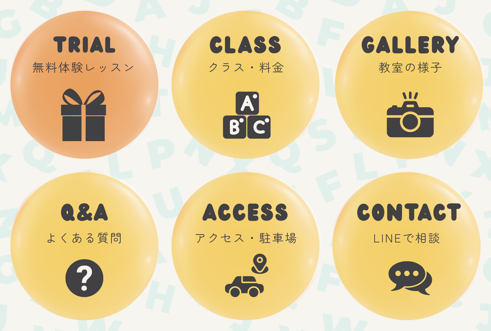

Cafe LINEリッチメニュー

制作概要
子ども向け英語教室を想定したLINE公式アカウント用リッチメニューです。
制作意図
英語教室のLINEでは、情報のわかりやすさだけでなく、「楽しそう」「通わせたい」と感じてもらえることを意識しました。
ターゲット
英会話教室を検討している幼児〜小学生の保護者
工夫した点
- 丸いボタンを使用することで、かわいらしさを表現しました。
- 背景にアルファベットを散りばめ、英語教室らしさを視覚的に表現しました。
- メイン導線となる「無料体験レッスン」だけ色を変え、最初に視線が集まるよう設計しました。
- イエローやオレンジを使い、明るく前向きな印象に仕上げました。
使用ツール
Canva
一覧へ戻る